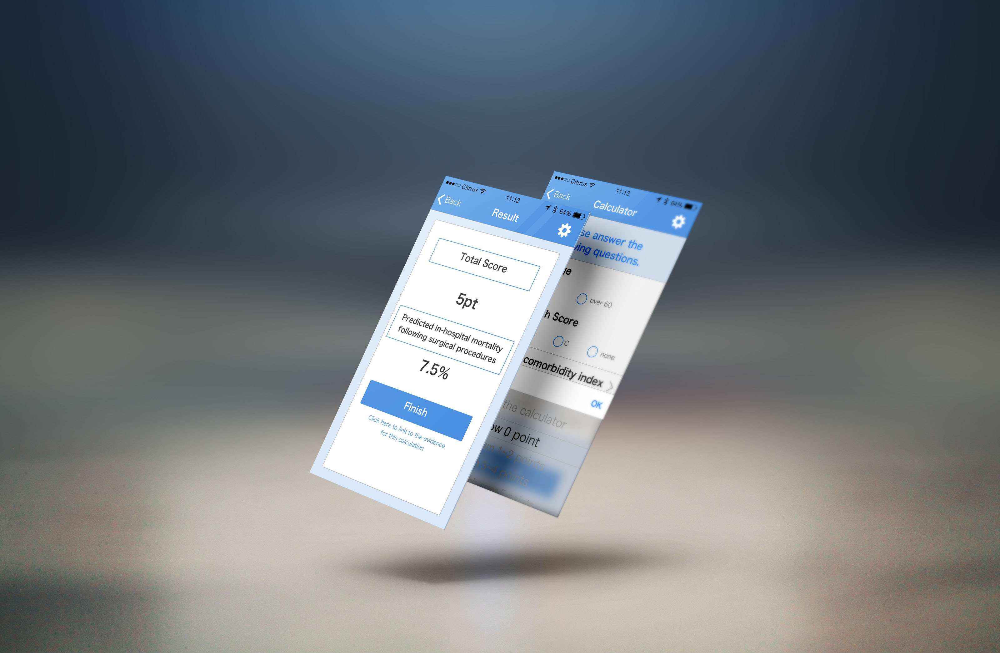
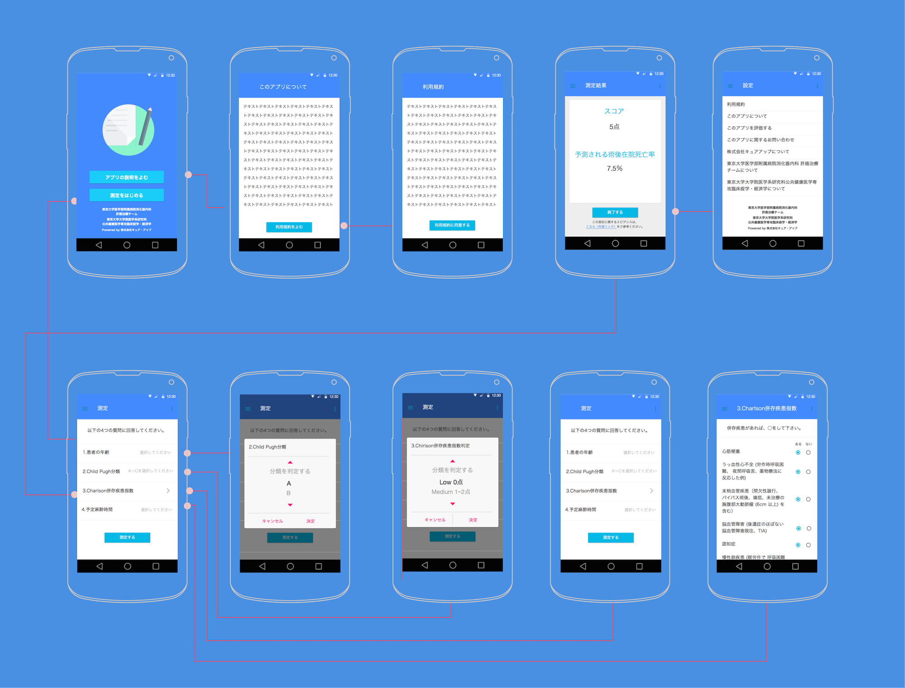
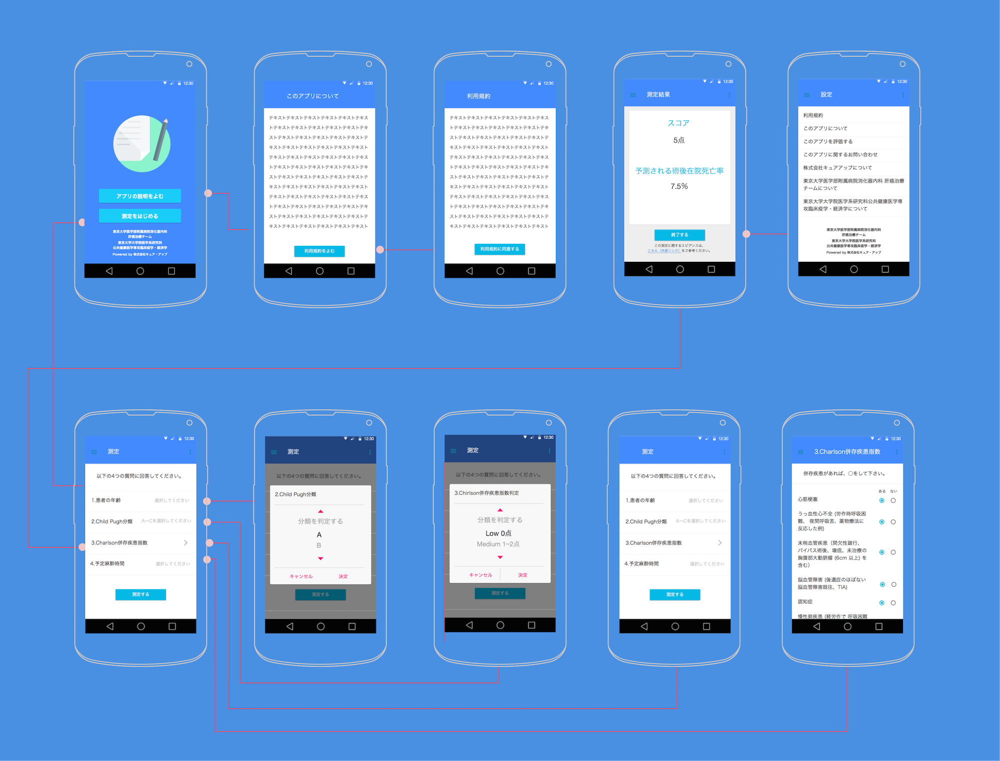

Adequate Operative Treatment for Liver Cirrhosis
(ADOPT-LC) Score
MobileHealth App 2015
Smartphones are so common now that most people have come
realize they are useful for more than a game of Candy Crush.
One study even predicted that in 2015,
more than 500 million smartphone users worldwide would be using health related apps.
But patients are not the only ones who find mobile applications useful.
Medical professionals around the world are already widely using a variety of apps to assist
with diagnoses, patient tracking, pharmaceutical interaction data, and much more.
Client: CureApp Inc.
My role: UI & UX Design

Using the Japanese nationwide database with more than 10 million patients,
I got the opportunity to work with one of to develop a model for
predicting in-hospital mortality of patients with surgical procedures
(excluding liver resection or transplantation).
This scoring system with simple parameters (patient age, Child-Pugh classification (A-C),
Charlson Comorbidity Index, and estimated duration of anesthesia) was
shown to provide higher predictive performance compared to Child-Pugh score (5-15 points) alone.
By the use of this scoring system,
this application software provides predicted in-hospital mortality calculated based on the 4 parameters you enter.
The inportance of Wireframe
 
